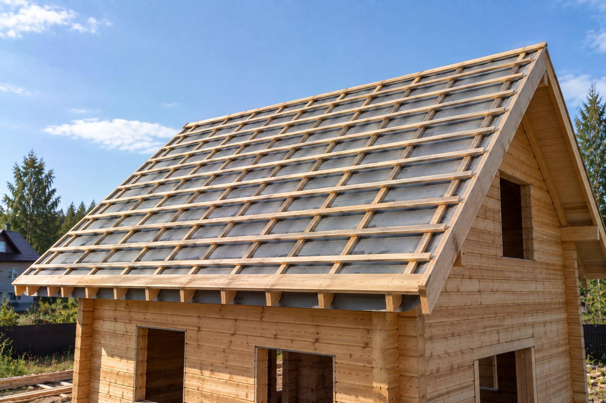

Контробрешётка
Рейки вдоль стропил. Нужны, когда между мембраной и покрытием должен остаться зазор. В прайсе — 250 ₽/м². Это не другое название шаговой обрешётки.
Делаю обрешётку под то покрытие, которое ляжет на эту крышу. «От 250 ₽/м²» — это контробрешётка. Шаговая обрешётка в прайсе стоит отдельно, 340 ₽/м². Один шаг на все материалы не даю. Работаю лично в Архангельске, Северодвинске и Новодвинске. Материалы в цену работ не входят.
от 250 ₽/м²
Позвонить: +7 921 484-08-74
Обрешётка держит покрытие. Какой она будет — шаговой или сплошной — решает материал кровли и состояние старого настила.
Рейки вдоль стропил. Нужны, когда между мембраной и покрытием должен остаться зазор. В прайсе — 250 ₽/м². Это не другое название шаговой обрешётки.
Доска с промежутками под лист. Шаг называю по покрытию этой крыши, а не один на металл, профнастил и фальц. В прайсе — 340 ₽/м².
Доска — 430 ₽/м², фанера или ОСП-3 — 450 ₽/м². Такой настил нужен там, где покрытие не ложится на шаг, например под гибкую черепицу.
Сухую обрешётку с подходящим шагом оставляю. Меняю, если дерево сгнило, просело или шаг чужой для нового покрытия.
Четыре строки прайса — четыре разные работы. «От 250» не заменяет 340, 430 и 450.
В калькуляторе на страницах покрытий галочка «Обрешётка» добавляет 340 ₽/м², а «Контробрешётка» — 250 ₽/м². Это те же две строки, а не одна цена. Калькулятор считает укладку покрытия, поэтому здесь его нет. Полный список — в прайсе.
По фото покрытия и, если получится, обрешётки изнутри скажу, какая строка нужна: контробрешётка, шаговая или сплошной настил. Это не итоговая смета.
Готового шага «для любой кровли» нет. Сначала покрытие и состояние дерева, потом строка прайса.
Лист обычно лежит на шаговой обрешётке, шаг совпадает с волной. Как устроена укладка — на страницах металлочерепицы и профнастила.
Гибкой черепице нужен сплошной настил. Он не входит в цену укладки гонта. Подробнее — мягкая кровля.
Одного основания на все фальцевые системы нет: где-то шаг, где-то сплошной настил. Это согласую до работ. Страница покрытия — фальцевая кровля.
Контробрешётку ставлю не на каждой крыше, а когда над ветровлагозащитой нужен зазор. Без этого зазора она не заменяет шаговую или сплошную обрешётку.
Реальные кровельные работы, выполненные мной.
Напишите, какое покрытие будет на крыше, и приложите фото ската. От материала зависит вид настила.
Смотрю, жива ли обрешётка и подходит ли её шаг. Если снимка мало, осматриваю крышу на месте.
До работ называю, что именно делаю: 250, 340, 430 или 450 ₽/м². Чужие строки не подмешиваю.
Собираю основание под покрытие. На выполненные работы — гарантия 1 год.
Это разные строки. 250 ₽/м² — контробрешётка. 340 ₽/м² — шаговая обрешётка. В калькуляторе покрытий они стоят двумя галочками. Калькулятор не заменяет расчёт этой страницы.
Общего шага нет. Его задаёт покрытие и карта конкретной крыши. Для мягкой кровли вместо шага чаще нужен сплошной настил.
Не всегда. Оставляю сухое дерево с подходящим шагом. Меняю гниль, просадку и шаг, который не подходит новому материалу. Разбор этой развилки есть в заметке про замену обрешётки.
Нет. Контробрешётка — 250 ₽/м², шаговая — 340 ₽/м², сплошная доска — 430 ₽/м², фанера или ОСП-3 — 450 ₽/м². Беру только то, что нужно на этой крыше.
Да. Работаю в Архангельске, Северодвинске и Новодвинске.
По снимку отделю контробрешётку от шаговой и сплошной. Шаг заранее, без крыши, не называю.